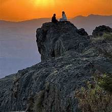
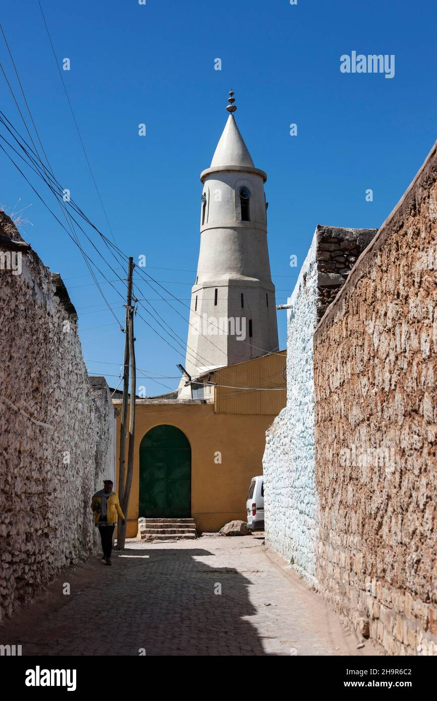

Explorer of hidden trails and ancient cities 🌍
Location: Addis Ababa, Ethiopia
Google Profile | Travel Posts on Google
Woke up to misty peaks and the sound of mountain wolves. This public post shares the magic of Ethiopia’s highlands.
This private reflection captures a quiet morning wandering through Harar’s ancient walls and colorful markets.
